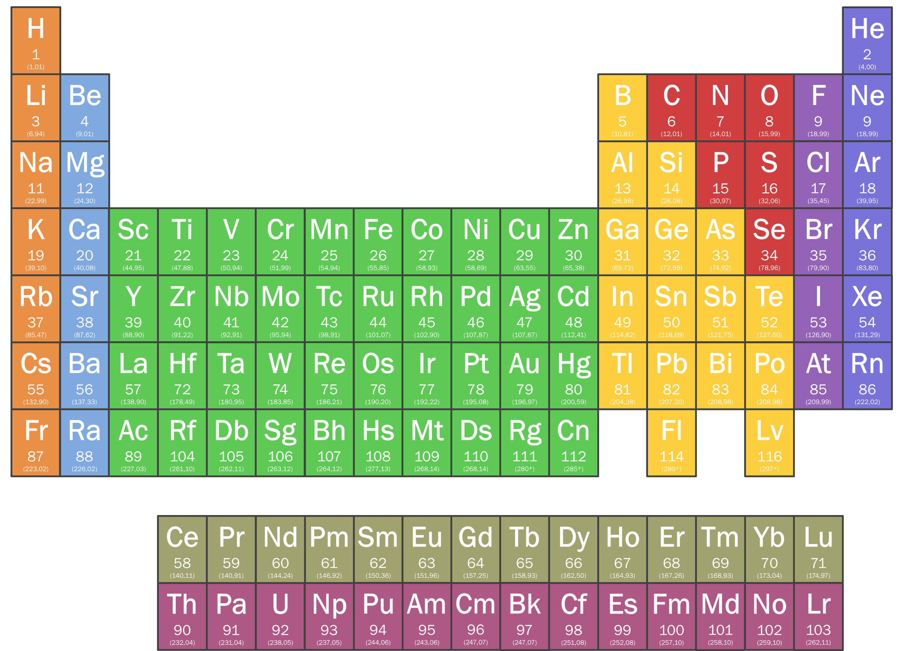
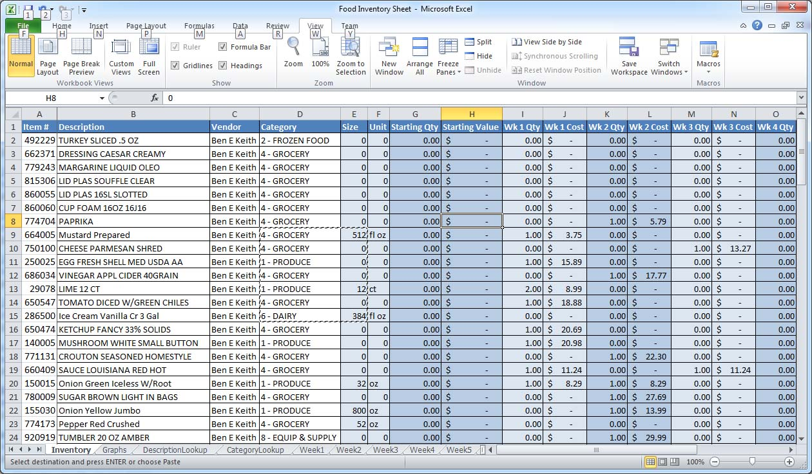
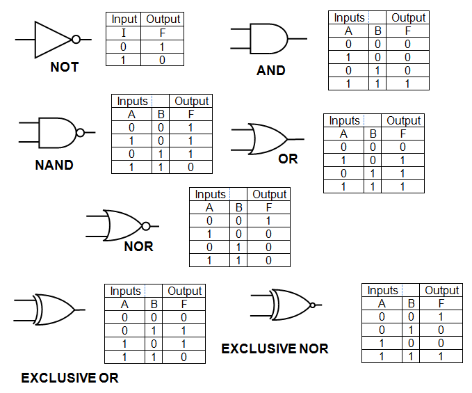

| Name | Surname | Favourite sauce | Hometown |
|---|---|---|---|
| Keanan | Erasmus | Seafood Sauce | Bonteheuwel |
| Fatima | Hendricks | Sweet Chilli Sauce | Vahlhalla Park |
| Ismet | Samsodien | Mustard | Ruyterwacht |
| Ebrahiem | Salie | Mustard | Bonteheuwel |
| Tohier | Dreyer | Seafood Sauce | Mitchells Plain |
| Raasikh | Booley | Mustard | Athlone |
| Liam | Hendricks | Tomato Sauce | Grassy Park |
| Khanyiso | Haman | BBQ | Delft |
| Imraan | Meyer | Mustard | Grassy Park |
| Justice | Ganiza | Tomato Sauce | Brooklyn |
| Rasool | Booley | BBQ | Lansdowne |
| Justin | Creighton | Dhanya Sauce | Cape Town |
| Nathier | Manuel | Sweet Chilli Mayo | Lost City |
| Taylor | Davids | Mayo | Bridgetown |
| Naasik | Kamish | Sweet Chilli Sauce | Hanover Park |
| Nur | Brock | Hot Sauce | Kensington |
| Elizebeth | Pollard | 1000 Islands | Cape Town |
| Nashville | James | Tomato Sauce | Cape Town |
| Marlon | Ford | Mustard | Grassy Park |
| Michelle | Forlan | 1000 Islands | Cape Town |
| Marco | Paulse | Mushroom Sauce | Ottery |
Tables are used in many sitiuations, it helps make it easier for us to read data on a number of things for instance like the periodic table of elements, multipliction time tables, the calender, microsoft excel spreadsheets etc.
The periodic table, or periodic table of elements, is a tabular arrangement of the chemical elements, ordered by their atomic number, electron configuration, and recurring chemical properties, whose structure shows periodic trends. Generally, within one row (period) the elements are metals to the left, and non-metals to the right, with the elements having similar chemical behaviours placed in the same column. Table rows are commonly called periods and columns are called groups. Six groups have accepted names as well as assigned numbers: for example, group 17 elements are the halogens; and group 18 are the noble gases. Also displayed are four simple rectangular areas or blocks associated with the filling of different atomic orbitals.
Microsoft Excel is a spreadsheet developed by Microsoft for Windows, macOS, Android and iOS. It features calculation, graphing tools, pivot tables, and a macro programming language called Visual Basic for Applications. It has been a very widely applied spreadsheet for these platforms, especially since version 5 in 1993, and it has replaced Lotus 1-2-3 as the industry standard for spreadsheets. Excel forms part of Microsoft Office.
A truth table is a mathematical table used in logic—specifically in connection with Boolean algebra, boolean functions, and propositional calculus—which sets out the functional values of logical expressions on each of their functional arguments, that is, for each combination of values taken by their logical variables.
Mathematical tables are lists of numbers showing the results of calculation with varying arguments. Before calculators were cheap and plentiful, people would use such tables to simplify and drastically speed up computation. Tables of logarithms and trigonometric functions were common in math and science textbooks. Specialized tables were published for applications such as astronomy, celestial navigation and statistics.